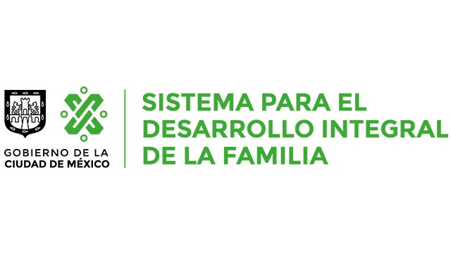

Soy Alejandro Romero Ramírez
Aquí les muestro unos datos para que conozcan un poquito más sobre mí.
EDUCACIÓN
Me ha gustado la música de pequeño, estudié violín en el Programa Niños Talento de 2012 a 2015 aproximadamente.

Estudié la Preparatoria de 2016 a 2019 en el Plantel 2 "Erasmo Castellanos Quinto". Ahí ingresé por COMIPEMS (Concurso de Selección) con 119 aciertos.
A mediados de 2019, ingresé mediante Pase Reglamentado a la Facultad de Ingeniería para cursar la carrera de Ingeniería en Computación.
 Hasta ahora cursé el Octavo Semestre de la Carrera y me siento feliz de pertenecer a la Universidad más grande e importante de Latinoamérica y el mundo.
Hasta ahora cursé el Octavo Semestre de la Carrera y me siento feliz de pertenecer a la Universidad más grande e importante de Latinoamérica y el mundo.
CURSOS ADQUIRIDOS
- Enero 2020. Curso Lenguaje C Básico. Laboratorio de Multimedia e Internet
- Julio 2020. Introducción al Internet de las Cosas. Cisco Networking Academy.
- Julio 2020, Mayo 2023. Introducción a la Ciberseguridad. Cisco Networking Academy.
- Agosto 2020. Introducción a la Programación en Python I: Aprendiendo a Programar con Python.
- Agosto 2020. Introducción a Java. UNAM (Coursera)
- Febrero 2022. Webinar de Capacitación en SCRUM
TRABAJOS REALIZADOS
- Junio 2022. Proyecto de Base de Datos. Elaboración de una Base de Datos para un Restaurante con Python y PostgreSQL.
- Junio 2023. Proyecto de Redes de Datos Seguras. Captura de Incidentes de Red mediante Apache Server con Python y PostgreSQL.